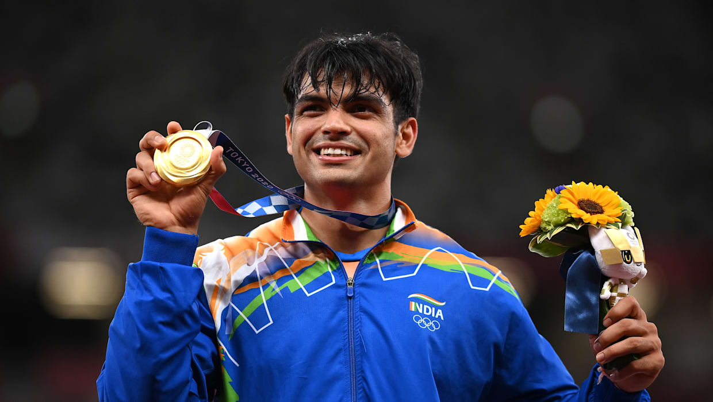
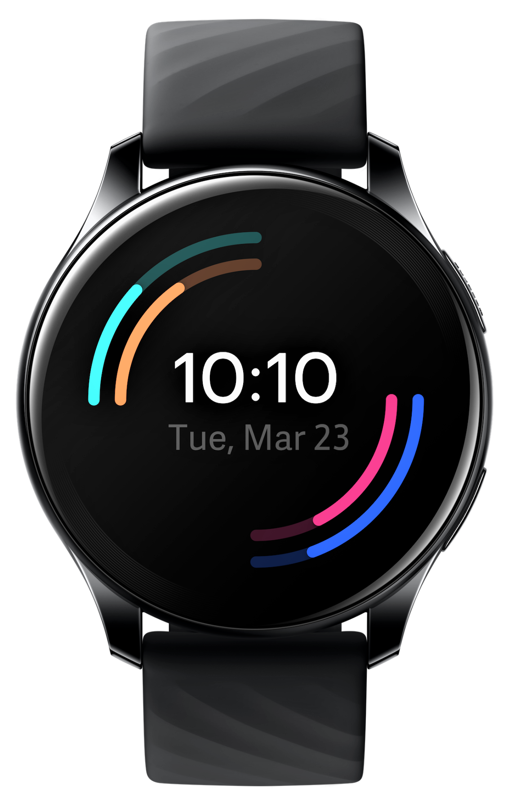
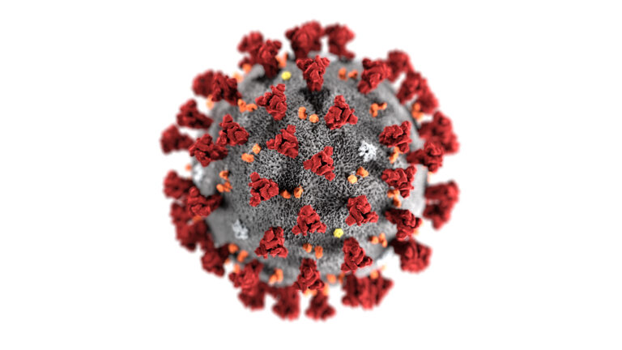

| Anudip News Channel | ||||
|---|---|---|---|---|
| 1. India got Gold Medal | 2. OnePlus Launches its Smart Watches | 3. Covid 3rd wave started Early in Chittor & East Godavari Districts | ||
|  |  |  | ||
Olympics 2020: Neeraj Chopra wins historic Gold in javelin throw, India's first athletics medal in 100 yrs. |
OnePlus is set to unveil its first smartwatch and second wearable in an online event alongside the launch of the OnePlus 9 series. The smartwatch was confirmed last year by the company’s CEO Pete Lau. Since then, there have been several leaks revealing the design and features of the smartwatch. |
Third Wave Scare 24,000 Children Test Positive For Covid-19 In Andhra Pradesh In Two Weeks. Andhra Pradesh's Two Districts, East Godavari and Chittoor accounted for nearly 8,000 Covid cases among children. |
||